Bureaucratism 55
-
 无题 · Untitled
无题 · Untitled
Li Jianxin 李建新. Renshi (Personnel), 1985 no. 1 (whole no. 1), inside back cover. -
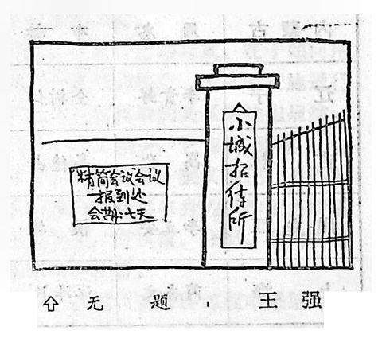
无题 · Untitled
Wang Qiang 王强. Renshi (Personnel), 1985 no. 2 (whole no. 2), p. 47. -
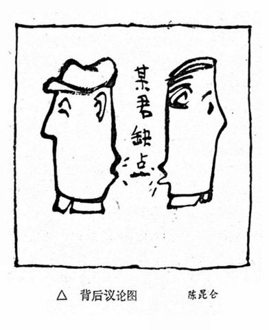
背后议论图 · Talking Behind Backs
Chen Kunlun 陈昆仑. Renshi (Personnel), 1985 no. 3 (whole no. 3), p. 44. -
 今天出门戴哪顶帽子呢？ · Which Hat Shall I Wear Today?
今天出门戴哪顶帽子呢？ · Which Hat Shall I Wear Today?
Li Bo 李波. Renshi (Personnel), 1985 no. 3 (whole no. 3), p. 44. -
 无题（机构） · Untitled (“Agencies”)
无题（机构） · Untitled (“Agencies”)
Unattributed. Renshi (Personnel), 1985 no. 3 (whole no. 3), p. 44. -
 水平 · Level
水平 · Level
Wei Ping 玮平. Renshi (Personnel), 1985 no. 3 (whole no. 3), p. 44. -
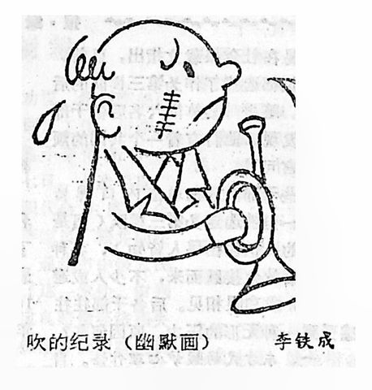
吹的纪录 · A Record in Blowing
Li Tiecheng 李铁成. Renshi (Personnel), 1986 no. 1 (whole no. 4), p. 41. -
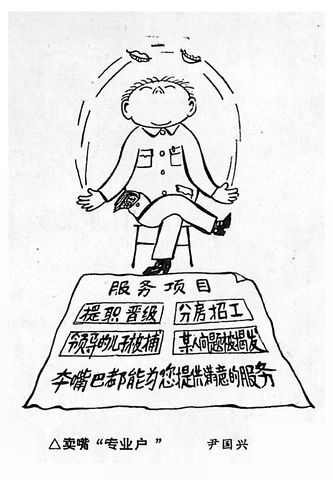
卖嘴"专业户" · A "Mouth-Selling Specialist"
Yin Guoxing 尹国兴. Renshi (Personnel), 1986 no. 1 (whole no. 4), inside back cover. -
 机关"运动会" · The Office "Sports Meet"
机关"运动会" · The Office "Sports Meet"
Xi Feng 西风. Renshi (Personnel), 1986 no. 1 (whole no. 4), inside back cover. -
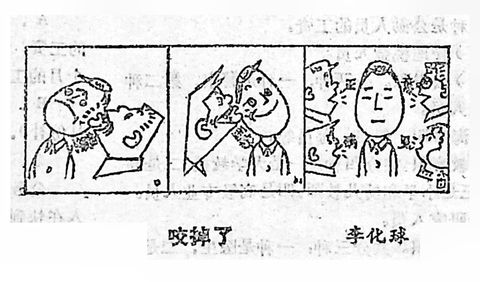
咬掉了 · Bitten Off
Li Huaqiu 李化球. Renshi (Personnel), 1986 no. 2 (whole no. 5), p. 38. -
 谁说我不在前进？ · Who Says I'm Not Moving Forward?
谁说我不在前进？ · Who Says I'm Not Moving Forward?
Hao Suping 郝苏平. Renshi (Personnel), 1986 no. 3 (whole no. 6), p. 39. -
 只会指手划脚 · All He Can Do Is Point and Gesture
只会指手划脚 · All He Can Do Is Point and Gesture
Unattributed. Renshi (Personnel), 1986 no. 4 (whole no. 7), p. 32. Reprinted from Gongren ribao (Workers' Daily). -
 彼此彼此 · Six of One
彼此彼此 · Six of One
Unattributed. Renshi (Personnel), 1986 no. 4 (whole no. 7), p. 44. Reprinted from Shanxi ribao (Shanxi Daily). -
 打入冷宫 · Banished to the Cold Palace
打入冷宫 · Banished to the Cold Palace
Wang Yan 王燕. Renshi (Personnel), 1986 no. 4 (whole no. 7), p. 47. -
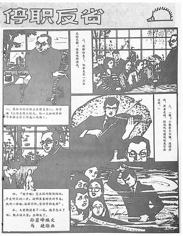
停职反省 · Suspended to Reflect on His Errors
Drawn by Ma Jie 马婕; text by Sun Yanfeng 孙岩峰. Renshi (Personnel), 1986 no. 4 (whole no. 7), inside back cover. -
 眼睛亮 耳朵聋 · Sharp Eyes, Deaf Ears
眼睛亮 耳朵聋 · Sharp Eyes, Deaf Ears
Nie Xuhua 聂旭华. Renshi (Personnel), 1986 no. 5 (whole no. 8), p. 11. -
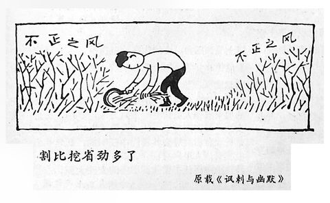
割比挖省劲多了 · Cutting Is Much Easier Than Digging
Unattributed. Renshi (Personnel), 1986 no. 6 (whole no. 9), p. 45. Reprinted from Fengci yu youmo (Satire and Humor). -
 无题 · Untitled
无题 · Untitled
Unattributed. Renshi (Personnel), 1986 no. 7 (whole no. 10), p. 48. -
 有意见请上来提 · If You Have Complaints, Come Up and Raise Them
有意见请上来提 · If You Have Complaints, Come Up and Raise Them
Luo Shichun 罗世春. Renshi (Personnel), 1986 no. 11 (whole no. 14), p. 40. -
 合影 · Group Photo
合影 · Group Photo
Yan Pingya 严平亚. Renshi (Personnel), 1986 no. 12 (whole no. 15), p. 45. -
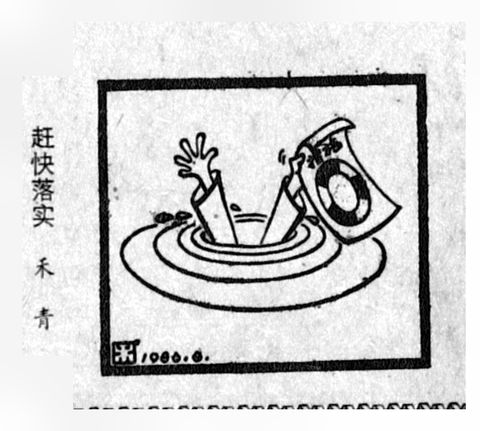
赶快落实 · Implement It Quickly
He Qing 禾青. Renshi (Personnel), 1986 no. 12 (whole no. 15), p. 46. -
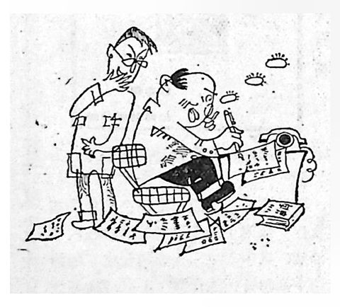
负负得正（插图） · Two Negatives Make a Positive (illustration)
He Fei 和非. Renshi (Personnel), 1987 no. 1 (whole no. 16), p. 48. -
 群仙荟萃 · A Gathering of Immortals
群仙荟萃 · A Gathering of Immortals
Gao Feng 高枫. Renshi (Personnel), 1987 no. 2 (whole no. 17), p. 11. -
 寸步难行 · Unable to Move an Inch
寸步难行 · Unable to Move an Inch
Chang Jin 常进. Renshi (Personnel), 1987 no. 2 (whole no. 17), p. 17. -
 局长要投篮 · The Bureau Chief Wants to Shoot a Basket
局长要投篮 · The Bureau Chief Wants to Shoot a Basket
Qiao Bo 乔波. Renshi (Personnel), 1987 no. 2 (whole no. 17), inside back cover. -
 领导的领导 · The Leader's Leader
领导的领导 · The Leader's Leader
Wang Peiqi 王培琪. Renshi (Personnel), 1987 no. 5 (whole no. 20), p. 43. -
 成才之后 · After Becoming Talent
成才之后 · After Becoming Talent
Wen Kexin 温克信. Renshi (Personnel), 1987 no. 5 (whole no. 20), p. 44. -
 照章办事 · Going by the Rules
照章办事 · Going by the Rules
Drawn by Li Guozhong 李国忠; adapted by Qian Ren 黔仁. Renshi (Personnel), 1987 no. 5 (whole no. 20), inside back cover. -
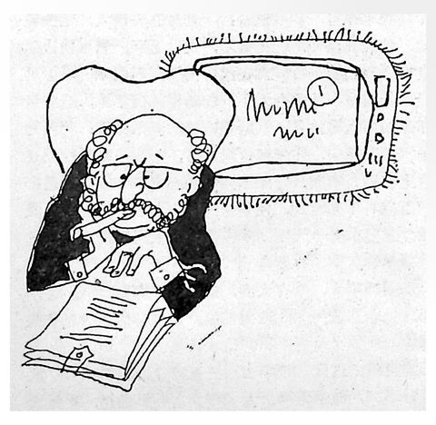
无题（《法国国有企业的管理》配图） · Untitled (drawing in “The Management of State Enterprises in France”)
Unattributed. Renshi (Personnel), 1987 no. 6 (whole no. 21), p. 38. -
 我这一辈子 · My Whole Life
我这一辈子 · My Whole Life
Unattributed. Renshi (Personnel), 1987 no. 6 (whole no. 21), p. 44. Reprinted from Manhua shijie (Cartoon World). -
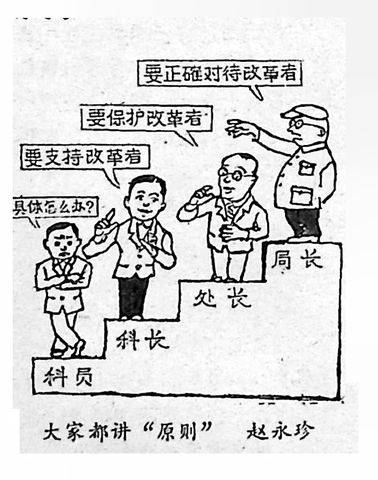
大家都讲“原则” · Everyone Talks “Principle”
Zhao Yongzhen 赵永珍. Renshi (Personnel), 1987 no. 7 (whole no. 22), p. 46. -
 再放一点 · Lower It a Little More
再放一点 · Lower It a Little More
Man Hua 满化. Renshi (Personnel), 1987 no. 11 (whole no. 26), p. 30. -
 机关碰壁记（诗配画） · Running into a Wall at the Office (poem drawing)
机关碰壁记（诗配画） · Running into a Wall at the Office (poem drawing)
Drawn by Wang Chunsheng 王春生. Renshi (Personnel), 1988 no. 1 (whole no. 28), p. 29. -
 未来考古 · Archaeology of the Future
未来考古 · Archaeology of the Future
Wang Fuyang 王复羊. Renshi (Personnel), 1988 no. 2 (whole no. 29), p. 47. -
 ——看谁还说老猪丑！ · “Now Let's See Who Still Calls Old Pig Ugly!”
——看谁还说老猪丑！ · “Now Let's See Who Still Calls Old Pig Ugly!”
Chen Jinghe 陈景和. Renshi (Personnel), 1988 no. 4 (whole no. 31), p. 46. Reprinted from Renmin ribao, haiwai ban (People's Daily, Overseas Edition). -
 某办公室即景 · A Scene in a Certain Office
某办公室即景 · A Scene in a Certain Office
Drawn by Jiang Peifeng 江沛丰; poem by Ma Liang 马良. Renshi (Personnel), 1988 no. 4 (whole no. 31), p. 48. -
 秘书小王 · Secretary Xiao Wang
秘书小王 · Secretary Xiao Wang
Adapted and drawn by Nai Dong 乃栋. Renshi (Personnel), 1988 no. 5 (whole no. 32), p. 29. -
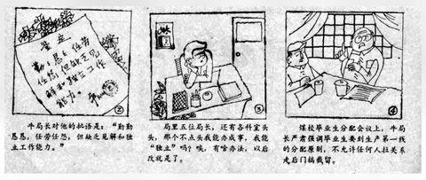
秘书小王（续一） · Secretary Xiao Wang (continued, 1)
Adapted and drawn by Nai Dong 乃栋. Renshi (Personnel), 1988 no. 5 (whole no. 32), p. 30. -
 秘书小王（续二） · Secretary Xiao Wang (continued, 2)
秘书小王（续二） · Secretary Xiao Wang (continued, 2)
Adapted and drawn by Nai Dong 乃栋. Renshi (Personnel), 1988 no. 5 (whole no. 32), p. 31. -
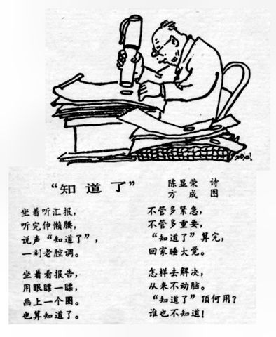
“知道了” · “Noted”
Drawn by Fang Cheng 方成; poem by Chen Xianrong 陈显荣. Renshi (Personnel), 1988 no. 5 (whole no. 32), inside back cover. -
 扯皮歌 · Song of Passing the Buck
扯皮歌 · Song of Passing the Buck
Drawn by Jiang Fan 江帆; poem by Chi Beiou 池北偶. Renshi (Personnel), 1988 no. 5 (whole no. 32), inside back cover. -
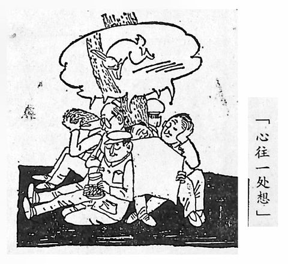
“心往一处想” · “All Thinking the Same Thing”
Unattributed. Renshi (Personnel), 1988 no. 7 (whole no. 34), p. 47. -
 “垂帘听政” · “Ruling from Behind the Curtain”
“垂帘听政” · “Ruling from Behind the Curtain”
Sun Xiaoming 孙小鸣. Renshi (Personnel), 1988 no. 8 (whole no. 35), p. 37. -
 “黑子”的作用（题图） · The Effect of “Sunspots” (title drawing)
“黑子”的作用（题图） · The Effect of “Sunspots” (title drawing)
Unattributed. Renshi (Personnel), 1988 no. 9 (whole no. 36), p. 48. -
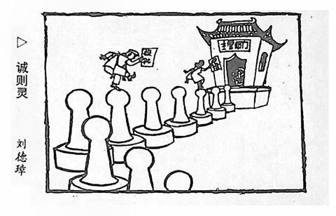
诚则灵 · Sincerity Brings Results
Liu Dezhang 刘德璋. Renshi (Personnel), 1988 no. 12 (whole no. 39), inside back cover. -
 评委亮分 · The Judges Show Their Scores
评委亮分 · The Judges Show Their Scores
Wei Ping 玮平. Renshi (Personnel), 1988 no. 12 (whole no. 39), inside back cover. -
 婆婆穿针图 · Mothers-in-Law Threading a Needle
婆婆穿针图 · Mothers-in-Law Threading a Needle
Zou Jingquan 邹敬泉. Renshi (Personnel), 1989 no. 9 (whole no. 48), inside back cover. -
 异化 · Alienation
异化 · Alienation
Unattributed. Renshi (Personnel), 1989 no. 11 (whole no. 50), p. 36. -
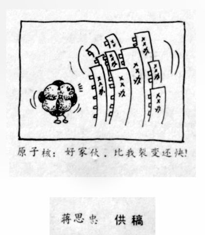
无题 · Untitled (“Atomic nucleus: Wow, faster than my fission!”)
Supplied by Jiang Sizhong 蒋思忠. Renshi (Personnel), 1989 no. 11 (whole no. 50), inside back cover. -
 杜甫告状（题图） · Du Fu Files a Complaint (title drawing)
杜甫告状（题图） · Du Fu Files a Complaint (title drawing)
Unattributed. Renshi (Personnel), 1990 no. 1 (whole no. 52), p. 38. -
 告诫 · A Warning
告诫 · A Warning
Unattributed. Renshi (Personnel), 1990 no. 4 (whole no. 55), p. 27. -
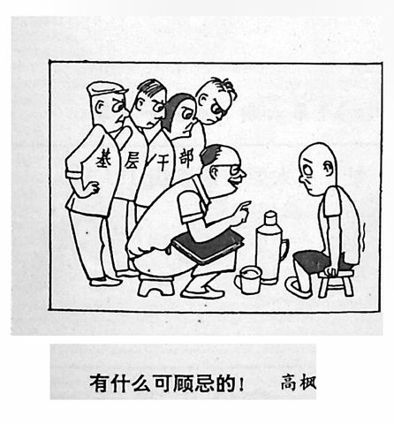
有什么可顾忌的！ · What Is There to Be Afraid Of!
Gao Feng 高枫. Renshi (Personnel), 1990 no. 6 (whole no. 57), inside back cover. -
 百里挑一 · One in a Hundred
百里挑一 · One in a Hundred
Wang Daquan 王大全. Renshi (Personnel), 1990 no. 6 (whole no. 57), inside back cover. -
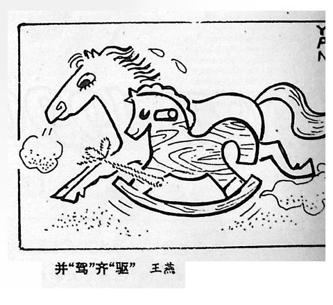
并“驾”齐“驱” · Running Neck and Neck
Wang Yan 王燕. Renshi (Personnel), 1990 no. 8 (whole no. 59), inside back cover. -
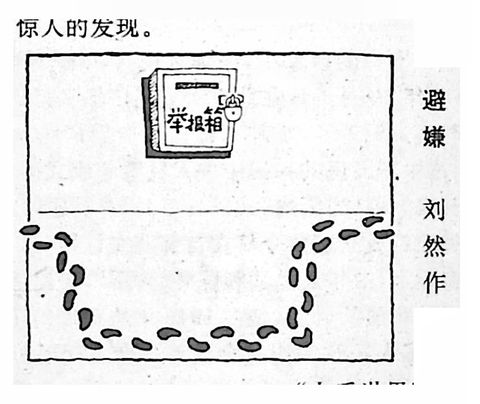
避嫌 · Keeping Clear
Liu Ran 刘然. Renshi (Personnel), 1990 no. 10 (whole no. 61), p. 40.